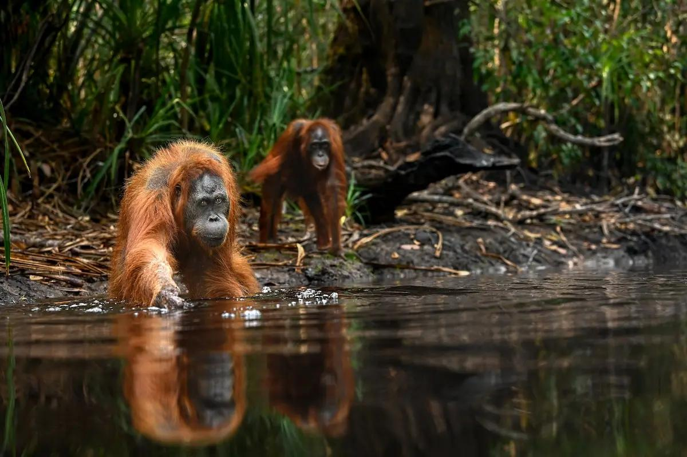

2. Danau Sentarum

Danau Sentarum berada di Kalimantan Barat. Kawasan ini memiliki danau musiman, hutan, dan keanekaragaman hayati yang menarik.
Kalimantan memiliki kekayaan alam yang indah, mulai dari hutan tropis, danau, hingga pegunungan. Berikut tiga destinasi wisata alam yang menarik.

Taman Nasional Tanjung Puting berada di Kalimantan Tengah dan terkenal dengan konservasi orangutan serta wisata susur sungai.
Danau Sentarum berada di Kalimantan Barat. Kawasan ini memiliki danau musiman, hutan, dan keanekaragaman hayati yang menarik.

Bukit Kelam terletak di Kabupaten Sintang, Kalimantan Barat. Tempat ini dikenal dengan formasi batu raksasa dan pemandangan alamnya.
Website tugas HTML lanjutan - Pertemuan 3